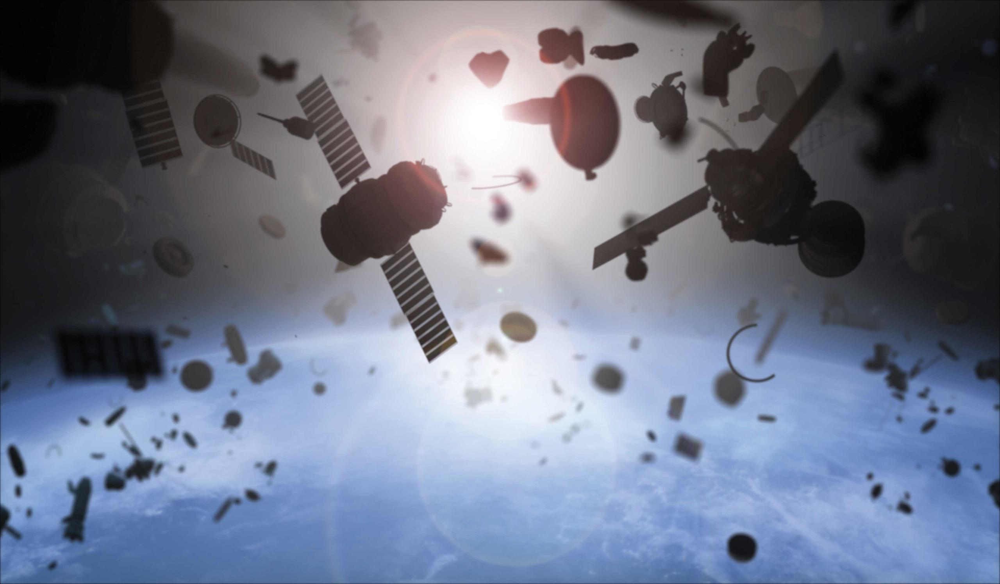

About Skyner
Why Skyner?
 Imagine coming home after a trying day at home. You can finally relax, let go of the day's troubles and enjoy the latest episode of your favorite show! You sit down in your oh so comfy sofa, grab the remote, turn on the TV aaaaaand...nothing! White noise on the screen instead of the much awaited theme. You grab your phone to try to contact a friend who might know how to solve this, only to realise you have no signal!
This is precisely the scenario we are working to prevent: satellites have become a vital part of our lives, which is why we have to protect them. And they are indeed in danger: over the years, more and more debris have accumulated in space around Earth. They are parts of the rockets used to launch satellites to space or parts of old satellites that have been damaged by collisions or missile trials. Their increasing numbers make them a very real threat, and as such it is vital we keep track of them.
Alright, what does Skyner do exactly?
Spacial debris can be placed in 3 categories: the smallest (under 1cm) are generally harmless, because the on-board shielding is strong enough to withstand impacts with them. The biggest (above 10cm) can be tracked from the surface using very powerful radars and are already being catalogued. We therefore concern ourselves with those between the scales: dangerous, but too small to be seen from Earth.
To do so, we use CubeSats equipped with radars to detect debris directly from the Low Earth Orbit (LEO), and then calculate their trajectories to determine whether they will impact satellites in the near future, in which case we can prevent the collision by alerting the owner of the need of an evasion maneuver.
But who are you?
We are students of the engineering school CentraleSupélec, working on this project at the behest of the CEA.